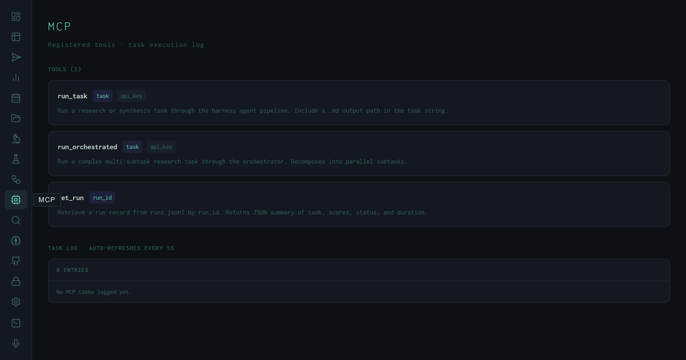

The MCP View: Exposing the Harness as a Tool Server
Three tools — run_task, run_orchestrated, get_run — make the full harness research pipeline callable from any Model Context Protocol client, with a live task log auto-refreshing every 5 seconds.
The Model Context Protocol (MCP) is a standard interface for exposing tool capabilities to LLM-based clients. Claude Desktop, Claude Code, and any MCP-compatible agent can call registered tools by name with typed parameters. The harness implements an MCP server alongside its REST API, which means the entire research pipeline — planner, search, synthesis, Wiggum evaluation loop — is callable as a tool from another agent.
The MCP view surfaces the registered tool manifest and a live log of every tool invocation that has been dispatched through the MCP interface.

MCP view: three registered tools with parameter badges (indigo = required, dim = optional) and descriptions. The task log is currently empty — no MCP-originated calls have been made in this session.
The Three Tools
task parameter is the same natural-language task string accepted by the CLI and Submit view — it can include skill flags like /deep or /cite, and should include a .md output path. api_key is optional; when omitted, the server uses its configured default key. Returns the queued item ID synchronously; the run executes asynchronously.subtask_max_workers=4), and aggregates results before synthesis. Use this for tasks that benefit from parallel research across multiple angles — the MCP caller gets back a single synthesis when all subtasks complete.data/runs.jsonl by run ID. Returns a JSON summary: task string, final score, pass/fail status, duration, producer model, and output path. This is the read side of the MCP interface — poll after run_task to check whether a submitted run has completed and what it scored.Parameter badges use two visual states: indigo background for required parameters, dim background for optional ones. This matches the convention from the harness Runs view and lets you read the tool signature at a glance without reading the description.
Usage Pattern: Task → Poll
The intended MCP usage pattern from a client like Claude Desktop:
# 1. Submit a task — returns an item_id immediately
result = run_task(task="Research DPO fine-tuning best practices and save to ~/Desktop/dpo.md")
item_id = result["item_id"]
# 2. Poll for completion using get_run (or wait for webhook)
run = get_run(run_id=item_id)
# run.final: "PASS" | "FAIL" | "ERROR"
# run.wiggum_scores: [8.3]
# run.output_path: "~/Desktop/dpo.md"The MCP server doesn't block on task completion — run_task enqueues and returns immediately, matching the behavior of the REST queue endpoint. The MCP client is responsible for deciding whether to poll with get_run, listen for a webhook (CLAUDE_WEBHOOK_URL), or simply wait a fixed duration before requesting results.
This is the pattern behind the harness MCP server used in this project's own development loop: Claude Code calls run_task to execute a research synthesis, waits for the run to complete, then calls get_run to retrieve the score and output path — all without leaving the coding environment.
The Task Log
The lower section of the MCP view is a live task log, auto-refreshing every 5 seconds. Each entry shows a timestamp (HH:MM:SS), a label identifying the source tool call, an event type (start / done / fail / line), and the event text. The current log shows 0 entries because no MCP-originated calls have been made in the current server session — the pipeline runs shown in the Analytics view were all submitted via the CLI or Submit view, not via MCP.
Same pipeline, different interface
run_task calls exactly the same code path as POST /api/queue and the CLI. Skills, flags, Wiggum evaluation, context window management — all identical. The MCP interface is a thin wrapper, not a different execution path.
Harness-as-tool for other agents
Any MCP client can register the harness server and call run_task to delegate research to a local expert. A Claude Code agent that needs literature context can hand off to the harness, get back a scored Markdown report, and incorporate the findings — without running the full pipeline itself.
Orchestrated vs. single-task
run_orchestrated is appropriate for tasks where the decomposition into parallel subtasks is valuable — "compare three RAG architectures" vs. "research RAG best practices." The orchestrator incurs additional overhead for the decomposition pass and synchronization, so single-task is faster for straightforward research questions.
Tool manifest source
The tool list is fetched from /api/mcp/tools and reflects the live registered tools. Adding a new MCP tool to harness/api/routes/mcp.py and restarting the server causes it to appear in the MCP view immediately — no dashboard rebuild required.